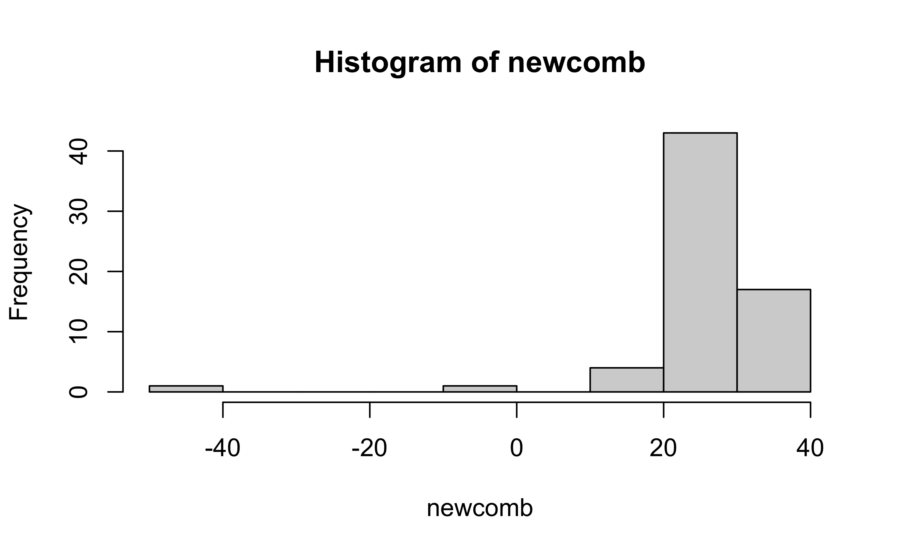

Capitolo 2 Distribuzione predittiva a posteriori
Oltre ad una sintesi della distribuzione a posteriori attraverso il computo di indici caratteristici e alla verifica di ipotesi, un altro compito dell’analisi bayesiana è la predizione di nuovi dati futuri. Dopo aver osservato i dati di un campione e ottenuto le distribuzioni a posteriori dei parametri, è infatti possibile ottenere una qualche indicazione su come potrebbero essere i dati futuri. L’uso più immediato della stima della distribuzione dei possibili valori futuri della variabile di esito è la verifica del modello. Infatti, il modo più diretto per testare un modello è quello di utilizzare il modello per fare previsioni sui possibili dati futuri per poi confrontare tali dati predetti con i dati effettivi. Questa pratica va sotto il nome di controllo predittivo a posteriori.
La distribuzione dei possibili valori futuri della variabile di esito può essere predetta da un modello statistico sulla base della distribuzione a posteriori dei parametri, \(p(\theta \mid y)\), avendo già osservato \(n\) manifestazioni dello stesso fenomeno \(y\). Una tale distribuzione va sotto il nome di distribuzione predittiva a posteriori (posterior predictive distribution, PPD).
Quando vengono simulate le osservazioni della distribuzione predittiva a posteriori si usa la notazione \(y^{rep}\) (dove \(rep\) sta per replica) quando, nella simulazione, vengono utilizzate le stesse osservazioni di \(X\) che erano state usate per stimare i parametri del modello. Si usa invece la notazione \(\tilde{y}\) per fare riferimento a possibili valori \(X\) che non sono contenuti nel campione osservato, ovvero, ad un campione di dati che potrebbe essere osservati in qualche futura occasione.
La distribuzione predittiva a posteriori viene usata per fare inferenze predittive. L’idea è che, se il modello ben si adatta bene ai dati del campione allora, sulla base dei parametri stimati, dovremmo essere in grado di generare nuovi dati non osservati \(y^{rep}\) che risultano molto simili ai dati osservati \(y\). I dati \(y^{rep}\) vengono concepiti come stime di \(\tilde{y}\).
La distribuzione predittiva a posteriorie è data da: \[\begin{equation} p(\tilde{y} \mid y) = \int_{\theta} p(\tilde{y}, \theta \mid y) d \theta = \int_{\theta} p(\tilde{y} \mid \theta, y) p(\theta \mid y) d\theta.\notag \end{equation}\] Supponendo che le osservazioni passate e future siano condizionalmente indipendenti dato \(\theta\), ovvero che \(p(\tilde{y} \mid \theta, y) = p(\tilde{y} \mid \theta)\), possiamo scrivere \[\begin{equation} p(\tilde{y} \mid y) = \int_{\theta} p(\tilde{y} \mid \theta) p(\theta \mid y) d\theta. \tag{2.1} \end{equation}\] La (2.1) descrive la nostra incertezza sulla distribuzione di future osservazioni di dati, data la distribuzione a posteriori di \(\theta\), ovvero tenendo conto della scelta del modello e della stima dei parametri mediante i dati osservati. Si noti che, nella (2.1), \(\tilde{y}\) è condizionato da \(y\) ma non da ciò che è incognito, ovvero \(\theta\). La distribuzione predittiva a posteriori è invece ottenuta mediante marginalizzazione sopra le variabili da “scartare”, ovvero sopra i parametri incogniti \(\theta\).
Esempio 2.1 Un esempio formulato mediante il codice Stan può chiarire questo concetto. Consideriamo il codice relativo alla distribuzione predittiva a posteriori nel caso di un modello di regressione lineare classico con un solo predittore \(x\). Il blocco Model sarà:
model {
y ~ normal(x * beta + alpha, sigma);
}Quello che è di interesse per la discussione presente è il blocco Generated Quantities. Tale blocco avrà questa forma:
generated quantities {
real y_rep[N];
for (n in 1:N) {
y_rep[n] = normal_rng(x[n] * beta + alpha, sigma);
}
}
La variabile y_rep è ciò a cui siamo interessati. Nel codice precedente, x è il vettore che contiene i valori della variabile indipendente nel campione di osservazioni esaminato. I parametri del modello di regressione sono alpha e beta; sigma è la stima dell’errore standard della regressione. Supponiamo che questi tre parametri siano degli scalari. Se lo fossero, per il valore x \(n\)-esimo, l’istruzione normal_rng() ritornerebbe un valore a caso dalla distribuzione normale con media \(\alpha + \beta x_n\) e deviazione standard \(\sigma\). Il ciclo for() ripete questa operazione \(N\) volte, ovvero tante volte quanti sono gli elementi del vettore x del campione. Quello che è stato detto sopra ci dà un’idea di quello che succederebbe se alpha,beta e sigma fossero degli scalari. Ma non lo sono. Per ciascuno dei tre paramatri abbiamo un numero molto alto di stime, ovvero l’approssimazione MCMC della distribuzione a posteriori. Poniamo che l’ampiezza campionaria \(N\) sia 30. Se alpha,beta e sigma fossero degli scalari, la distribuzione predittiva a posteriori sarebbe costituita da 30 valori \(y^{rep}\), ovvero, non sarebbe nient’altro che \(\hat{y} = \hat{\alpha} + \hat{\beta} x\). Ma alpha, beta e sigma non sono degli scalari: per ciascuno di questi parametri abbiamo un grande numero di stime, diciamo 2000. Dunque, quando normal_rng() estrae un valore a caso dalla distribuzione normale, i parametri della normale non sono fissi: per determinare \(\mu\) prendiamo un valore a caso, beta', dalla distribuzione beta e un valore a caso, alpha', dalla distribuzione alpha. Avendo questi due valori, calcoliamo \(\mu'_n = \alpha' + \beta' x_n\). Lo stesso per \(\sigma'\). Possiamo poi trovare y_n' estraendo un valore a caso dalla normale di parametri \(\mu'\) e \(\sigma'\). Per il valore \(x\) \(n\)-esimo possiamo ripetere tante volte questo processo. Se lo ripetiamo, ad esempio, 10,000 volte, per tutti e 30 valori \(x\), otterremo una matrice \(30 \times 10000\). In questo modo possiamo generare previsioni, ovvero \(y^{rep}\), che includono due fonti di incertezza:
- la variabilità campionaria, ovvero il fatto che abbiamo osservato un particolare insieme di valori \((x, y)\); in un altro campione tali valori saranno diversi;
- la variabilità a posteriori della distribuzione dei parametri, ovvero il fatto che di ciascun parametro non conosciamo il “valore vero” ma solo una distribuzione (a posteriori) di valori.
Nel caso dell’esempio presente, l’integrale della (2.1) può essere interpretato dicendo che, nella matrice dell’esempio di dimensioni \(30 \times 2000\), marginalizziamo rispetto alle colonne, ovvero, facciamo la media dei valori colonna per ciascuna riga. Otteniamo così un vettore di 30 osservazioni, y^{rep}. L’istogramma di y^{rep} può essere usato come stima di \(p(\tilde{y} \mid y)\).
Quando, con metodi grafici, vengono esaminati i valori della distribuzione predittiva a posteriori, possiamo esaminare un numero arbitrario di previsioni. Per esempio, possiamo rappresentare graficamente 50 rette di regressione predette – o un qualsiasi altro numero. Questa rappresentazione grafica quantifica la nostra incertezza a posteriori, in questo esempio, relativamente all’orientamento della retta di regressione.
2.1 Come generare la PPD: lo schema Beta-Binomiale
Illustreremo ora il problema di trovare la distribuzione \(p(\tilde{y} \mid y)\) in un caso semplice, ovvero quello dello schema Beta-Binomiale. Nell’esempio, useremo un’altra volta i dati del campione di pazienti clinici depressi di Zetsche, Bürkner, e Renneberg (2019) – si veda l’Appendice ??. Supponiamo di volere esaminare in futuro altri 20 pazienti clinici; ci chiediamo quanti di essi (\(\tilde{y} \in \{0, 1, \dots, 20\}\)) manifesteranno una depressione grave.
Se vogliamo fare predizioni su \(\tilde{y}\) dobbiamo innanzitutto riconoscere che i valori \(\tilde{y} \in [0, 20]\) non sono tutti egualmente plausibili. Sappiamo che \(\tilde{y}\) è una v.c. binomiale con distribuzione \[\begin{equation} p(\tilde{y}\mid \theta) = \binom{20}{\tilde{y}} \theta^{\tilde{y}}(1-\theta)^{20 - \tilde{y}} \; . \tag{2.2} \end{equation}\] La v.c. \(\tilde{y}\) dipende da \(\theta\), ma \(\theta\) è essa stessa una variabile casuale. Avendo osservato \(y = 23\) successi in \(n = 30\) prove nel campione a disposizione (laddove la presenza di una depressione grave è considerata un “successo”), e avendo assunto come distribuzione a priori per \(\theta\) una \(\mbox{Beta}(2, 10)\), per continuare con l’esempio precedente, la distribuzione a posteriori di \(\theta\) sarà una \(\mbox{Beta}(25, 9)\). Per trovare la distribuzione sui possibili dati previsti futuri \(\tilde{y}\) dobbiamo dunque applicare la (2.1): \[\begin{align} p(\tilde{y} \mid y = 23) = \int_0^1 p(\tilde{y} \mid \theta) p(\theta \mid y = 23) d\theta \; . \tag{2.3} \end{align}\] Per il modello Beta-Binomiale, che stiamo discutendo, è possibile trovare una soluzione analitica all’equazione (2.1): \[\begin{align} p(\tilde{y} \mid y) &= \int_0^1 p(\tilde{y} \mid \theta) p(\theta \mid y)\, d\theta \notag\\ &= \int_0^1 \begin{pmatrix}\tilde{n}\\\tilde{y}\end{pmatrix} \theta^{\tilde{y}} (1-\theta)^{\tilde{n}-\tilde{y}} \mbox{Beta}(a+y,b+n-y) \, d\theta \notag\\ &= \begin{pmatrix}{\tilde{n}}\\\tilde{y}\end{pmatrix} \int_0^1 \theta^{\tilde{y}} (1-\theta)^{\tilde{n}-\tilde{y}} \frac{1}{B(a+y, b+n-y)}\theta^{a+y-1}(1-\theta)^{b+n-y-1}\notag\\ &= \begin{pmatrix}{\tilde{n}}\\\tilde{y}\end{pmatrix} \frac{1}{B(a+y, b+n-y)}\int_0^1 \theta^{\tilde{y}+a+y-1}(1-\theta)^{\tilde{n}-\tilde{y}+b+n-y-1}\notag\\ &= \begin{pmatrix}{\tilde{n}}\\\tilde{y}\end{pmatrix} \frac{B(\tilde{y}+a+y,b+n-y+\tilde{n}-\tilde{y})}{B(a+y, b+n-y)} \; . \tag{2.4} \end{align}\] Svolgendo i calcoli in \(\R\), per i dati dell’esempio otteniamo:
# Beta Binomial Predictive distribution function
# https://rpubs.com/FJRubio/BetaBinomialPred
BetaBinom <- Vectorize(
function(rp){
log_val <- lchoose(np, rp) +
lbeta(rp+a+y, b+n-y+np-rp) -
lbeta(a+y, b+n-y)
return(exp(log_val))
}
)
n <- 30
y <- 23
a <- 2
b <- 10
np <- 20
data.frame(
heads = 0:20,
pmf = BetaBinom(0:20)
) %>%
ggplot(aes(x = factor(heads), y = pmf)) +
geom_col() +
geom_text(
aes(label = round(pmf, 2), y = pmf + 0.01),
position = position_dodge(0.9),
size = 3,
vjust = 0
) +
labs(
title = "Distribuzione predittiva a posteriori",
x = "y'",
y = "P(Y = y' | Data)"
) 
È facile vedere che, in questo esempio, la distribuzione predittiva a posteriori \(p(\tilde{y} \mid y)\) è diversa dalla binomiale di parametro \(\theta = 23/30\):
tibble(
heads = 0:20,
pmf = dbinom(x = 0:20, size = 20, prob = 23/30)
) %>%
ggplot(aes(x = factor(heads), y = pmf)) +
geom_col() +
geom_text(
aes(label = round(pmf, 2), y = pmf + 0.01),
position = position_dodge(0.9),
size = 3,
vjust = 0
) +
labs(title = "p(y | theta = 0.77)",
x = "y",
y = "Probabilità") In particolare, la \(p(\tilde{y} \mid y)\) ha una varianza maggiore di \(\Bin(y \mid \theta = 0.77, n = 20)\). Questa maggiore varianza riflette le due fonti di incertezza che sono presenti nella (2.1): l’incertezza sul valore del parametro (descritta dalla distribuzione a posteriori) e l’incertezza dovuta alla variabilità campionaria (descritta dalla funzione di verosimiglianza). Possiamo concludere la discussione di questo esempio dicendo che, nel caso di 20 nuovi pazienti clinici, ci aspettiamo di osservare 12 pazienti che manifestano una depressione severa, anche se è ragionevole aspettarci un numero compreso, diciamo, tra 8 e 16.
Una volta trovata la distribuzione predittiva a posteriori \(p(\tilde{y} \mid y)\) diventa possibile rispondere a domande come: qual è la probabilità che almeno 10 dei 20 pazienti futuri mostrino una depressione grave? Rispondere a domande di questo tipo è possibile, ma richiede un po’ di lavoro — non ci sono funzioni \(\R\) che svolgano questi calcoli per noi. Tuttavia, non è importante imparare a risolvere problemi di questo tipo perché, in generale, anche per problemi solo leggermente più complessi di quello discusso qui, non sono disponibili espressioni analitiche della distribuzione predittiva a posteriori. Invece, è possibile trovare una approssimazione numerica della \(p(\tilde{y} \mid y)\) mediante simulazioni MCMC. Mediante un tale metodo è più facile rispondere a domande simili a quelle che ci siamo posti in questo Paragrafo.
2.2 Metodi MCMC per la distribuzione predittiva a posteriori
Se svolgiamo l’analisi bayesiana con il metodo MCMC, le repliche \(p(y^{rep} \mid y)\) (ovvero le stime delle possibili osservazioni future \(p(\tilde{y} \mid y)\)) possono essere ottenute nel modo seguente:
- campionare \(\theta_i \sim p(\theta \mid y)\), ovvero campionare un valore del parametro dalla distribuzione a posteriori;
- campionare \(y^{rep} \sim p(y^{rep} \mid \theta_i)\), ovvero campionare il valore di un’osservazione dalla funzione di verosimiglianza condizionata al valore del parametro definito nel passo precedente.
Se i due passaggi descritti sopra vengono ripetuti un numero sufficiente di volte, l’istogramma risultante approssimerà la distribuzione predittiva a posteriori che, in teoria (ma non in pratica) potrebbe essere ottenuta per via analitica (si veda il Paragrafo 2.1).
Per fare un esempio concreto, esaminiamo il codice Stan che può essere usato per simulare \(p(y^{rep} \mid y)\). Consideriamo il caso semplice dell’inferenza su una proporzione — si veda il Capitolo ??:
modelString = "
data {
int<lower=0> N;
int<lower=0, upper=1> y[N];
}
parameters {
real<lower=0, upper=1> theta;
}
model {
theta ~ beta(2, 10);
y ~ bernoulli(theta);
}
generated quantities {
int y_rep[N];
real log_lik[N];
for (n in 1:N) {
y_rep[n] = bernoulli_rng(theta);
log_lik[n] = bernoulli_lpmf(y[n] | theta);
}
}
"
writeLines(modelString, con = "code/betabin23-30-2-10.stan")
Si noti che nel nel blocco generated quantities sono state aggiunte le istruzioni necessarie per simulare \(y^{rep}\), ovvero, y_rep[n] = bernoulli_rng(theta). I dati dell’esempio sono:
Compiliamo il codice Stan
file <- file.path("code", "betabin23-30-2-10.stan")
mod <- cmdstan_model(file)ed eseguiamo il campionamento MCMC:
fit <- mod$sample(
data = data_list,
iter_sampling = 4000L,
iter_warmup = 2000L,
seed = SEED,
chains = 4L,
parallel_chains = 4L,
refresh = 0,
thin = 1
)
Per comodità, trasformiamo l’oggetto fit in un oggetto di classe stanfit:
stanfit <- rstan::read_stan_csv(fit$output_files())
Il contenuto dell’oggetto stanfit può essere esaminato nel modo seguente:
list_of_draws <- extract(stanfit)
print(names(list_of_draws))
#> [1] "theta" "y_rep" "log_lik" "lp__"
Dall’oggetto list_of_draws recuperiamo y_rep:
y_bern <- list_of_draws$y_rep
dim(y_bern)
#> [1] 16000 30
head(y_bern)
#>
#> iterations [,1] [,2] [,3] [,4] [,5] [,6] [,7] [,8] [,9] [,10] [,11] [,12] [,13]
#> [1,] 0 1 1 0 0 1 1 1 1 1 1 0 0
#> [2,] 1 0 1 0 1 1 1 1 1 1 1 1 1
#> [3,] 1 1 0 1 1 1 0 1 1 0 0 1 1
#> [4,] 0 1 1 1 0 1 1 1 1 1 1 1 0
#> [5,] 0 1 1 0 0 1 1 0 1 0 1 1 0
#> [6,] 1 1 1 0 0 0 0 1 0 1 1 1 1
#>
#> iterations [,14] [,15] [,16] [,17] [,18] [,19] [,20] [,21] [,22] [,23] [,24]
#> [1,] 0 1 1 0 1 0 1 1 0 1 0
#> [2,] 1 0 1 0 0 1 1 1 0 1 1
#> [3,] 1 1 1 1 1 1 1 0 1 0 1
#> [4,] 1 0 0 1 1 1 1 1 1 1 1
#> [5,] 1 1 1 0 1 1 1 0 0 1 1
#> [6,] 0 1 1 0 0 1 0 0 1 0 1
#>
#> iterations [,25] [,26] [,27] [,28] [,29] [,30]
#> [1,] 0 0 1 1 1 0
#> [2,] 1 1 0 1 1 1
#> [3,] 0 1 0 1 1 0
#> [4,] 1 0 0 1 0 1
#> [5,] 1 1 0 1 0 0
#> [6,] 1 1 1 1 1 0
Dato che il codice Stan definisce un modello per i dati grezzi (ovvero, per ciascuna singola prova Bernoulliana del campione), ogni riga di y_bern include 30 colonne, ciascuna delle quali corrisponde ad un campione (\(n\) = 16000 in questa simulazione) di possibili valori futuri \(y_i \in \{0, 1\}\). Per ottenere una stima della distribuzione predittiva a posteriori p(y_rep), ovvero, una stima della probabilità associata a ciascuno dei possibili numeri di “successi” in \(N = 30\) nuove prove future, è sufficiente calcolare la proporzione di valori 1 in ciascuna riga:
data.frame(y_rep = rowSums(y_bern)) %>%
ggplot(aes(x = y_rep, after_stat(density))) +
geom_histogram(binwidth = 1) 
2.3 Posterior predictive checks
La distribuzione predittiva a posteriori viene utilizzata per eseguire i cosiddetti controlli predittivi a posteriori (Posterior Predictive Checks, PPC). Ricordiamo che la distribuzione predittiva a posteriori corrisponde alla simulazione di un campione di dati generati utilizzando le proprietà del modello adattato. Nei PPC si realizza un confronto grafico tra \(p(y^{rep} \mid y)\) e i dati osservati \(y\). Confrontando visivamente gli aspetti chiave dei dati previsti futuri \(y^{rep}\) e dei dati osservati \(y\) possiamo determinare se il modello è adeguato.
Oltre al confronto tra le distribuzioni \(p(y)\) e \(p(y^{rep})\) è anche possibile un confronto tra la distribuzione di varie statistiche descrittive, i cui valori sono calcolati su diversi campioni \(y^{rep}\), e le corrispondenti statistiche descrittive calcolate sui dati osservati. Vengono solitamente considerate statistiche descrittive quali la media, la varianza, la deviazione standard, il minimo o il massimo. Ma confronti di questo tipo sono possibili per qualunque statistica descrittiva. Questi confronti sono chiamati PPC.
2.3.1 PPC per la velocità della luce
Qui di seguito esamineremo un set di dati che non seguono la distribuzione normale (Gelman, Hill, e Vehtari 2020). I dati corrispondono ad una serie di misurazioni prese da Simon Newcomb nel 1882 come parte di un esperimento per stimare la velocità della luce. A questi dati verrà (inappropriatamente) adattata una distribuzione normale. L’obiettivo dell’esempio è quello di mostrare come i PPC possono rivelare la mancanza di adattamento di un modello ai dati.

Creiamo un oggetto di tipo list dove inserire i dati:
Il codice Stan per il modello normale è il seguente:
modelString <- "
data {
int<lower=0> N;
vector[N] y;
}
parameters {
real mu;
real<lower=0> sigma;
}
model {
mu ~ normal(25, 10);
sigma ~ cauchy(0, 10);
y ~ normal(mu, sigma);
}
generated quantities {
vector[N] y_rep;
for (n in 1:N) {
y_rep[n] = normal_rng(mu, sigma);
}
}
"
writeLines(modelString, con = "code/newcomb.stan")Adattiamo il modello ai dati
file <- file.path("code", "newcomb.stan")
mod <- cmdstan_model(file)
fit <- mod$sample(
data = data_list,
iter_sampling = 4000L,
iter_warmup = 2000L,
seed = SEED,
chains = 4L,
parallel_chains = 4L,
refresh = 0,
thin = 1
)e otteniamo le seguenti stime dei parametri \(\mu\) e \(\sigma\):
fit$summary(c("mu", "sigma"))
#> # A tibble: 2 × 10
#> variable mean median sd mad q5 q95 rhat ess_bulk ess_tail
#> <chr> <dbl> <dbl> <dbl> <dbl> <dbl> <dbl> <dbl> <dbl> <dbl>
#> 1 mu 26.2 26.2 1.33 1.32 24.0 28.4 1.00 12233. 9822.
#> 2 sigma 10.9 10.8 0.973 0.953 9.39 12.6 1.00 12499. 10060.
Trasformiamo fit in un oggetto stanfit:
stanfit <- rstan::read_stan_csv(fit$output_files())La distribuzione a posteriori di \(\mu\) è
mu_draws <- as.matrix(stanfit, pars = "mu")
mcmc_areas(mu_draws, prob = 0.95) # color 95% intervalConfrontiamo \(\mu\) con la media di \(y\):
mean(newcomb)
#> [1] 26.2
Anche se trova la media giusta, il modello non è comunque adeguato a prevedere le altre proprietà della \(y\). Estraiamo \(y^{rep}\) dall’oggetto stanfit:
I valori y_rep sono i dati della distribuzione predittiva a posteriori che sono stati simulati usando gli stessi valori \(X\) dei predittori utilizzati per adattare il modello. Il confronto tra l’istogramma della \(y\) e gli istogrammi di diversi campioni \(y^{rep}\) mostra una scarsa corrispondenza tra i due:
ppc_hist(data_list$y, y_rep[1:8, ], binwidth = 1)
Alla stessa conclusione si giunge tramite un confronto tra la funzione di densità empirica della \(y\) e quella di diversi campioni \(y^{rep}\):
ppc_dens_overlay(data_list$y, y_rep[1:50, ])
Generiamo ora i PPC per la media e il minimo della distribuzione:
ppc_stat_2d(data_list$y, y_rep, stat = c("mean", "min"))Mentre la media viene riprodotta accuratamente dal modello (come abbiamo visto sopra), ciò non è vero per il minimo dela distribuzione. L’origine di questa mancanza di adattamento è il fatto che la distribuzione delle misurazioni della velocità della luce è asimmetrica negativa. Dato che ci sono poche osservazioni nella coda negativa della distribuzione, solo per fare un esempio, utilizzeremo ora un secondo modello che ipotizza una distribuzione \(t\) di Student:
modelString = "
data {
int<lower=0> N;
vector[N] y;
}
parameters {
real mu;
real<lower=0> sigma;
real<lower=0> nu;
}
model {
mu ~ normal(25, 10);
sigma ~ cauchy(0, 10);
nu ~ cauchy(0, 10);
y ~ student_t(nu, mu, sigma);
}
generated quantities {
vector[N] y_rep;
for (n in 1:N) {
y_rep[n] = student_t_rng(nu, mu, sigma);
}
}
"
writeLines(modelString, con = "code/newcomb2.stan")Adattiamo questo secondo modello ai dati.
file <- file.path("code", "newcomb2.stan")
mod <- cmdstan_model(file)
fit <- mod$sample(
data = data_list,
iter_sampling = 4000L,
iter_warmup = 2000L,
seed = 123456,
chains = 4L,
parallel_chains = 2L,
refresh = 0,
thin = 1
)
#> Running MCMC with 4 chains, at most 2 in parallel...
#>
#> Chain 1 finished in 0.3 seconds.
#> Chain 2 finished in 0.3 seconds.
#> Chain 3 finished in 0.3 seconds.
#> Chain 4 finished in 0.3 seconds.
#>
#> All 4 chains finished successfully.
#> Mean chain execution time: 0.3 seconds.
#> Total execution time: 0.8 seconds.Per questo secondo modello il confronto tra la funzione di densità empirica della \(y\) e quella di diversi campioni \(y^{rep}\) risulta adeguato:
stanfit <- rstan::read_stan_csv(fit$output_files())
y_rep <- as.matrix(stanfit, pars = "y_rep")
ppc_dens_overlay(data_list$y, y_rep[1:50, ])
Inoltre, anche la statistica “minimo della distribuzione” viene ben predetta dal modello.
ppc_stat_2d(data_list$y, y_rep, stat = c("mean", "min"))In conclusione, per le misurazioni della velocità della luce di Newcomb l’accuratezza predittiva del modello basato sulla distribuzione \(t\) di Student è chiaramente migliore di quella del modello normale.
Considerazioni conclusive
Questo capitolo presenta i controlli predittivi a posteriori. A questo proposito è necessario notare un punto importante: i controlli predittivi a posteriori, quando suggeriscono un buon adattamento del modello alle caratterische dei dati previsti futuri \(y^{rep}\), non forniscono necessariamente una forte evidenza della capacità del modello di generalizzarsi a nuovi campioni di dati. Una tale evidenza sulla generalizzabilità del modello può solo essere fornita da studi di holdout validation, ovvero da studi nei quali viene utilizzato un nuovo campione di dati. Se i PPC mostrano un cattivo adattamento del modello ai dati previsti futuri, però, questo controllo fornisce una forte evidenza di una errata specificazione del modello.